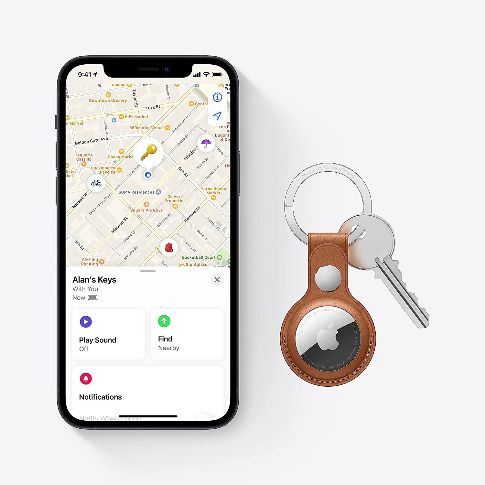

HCI Technologies
Portfolio
2022
Houwin
CMD-HT | HCI Technologies - Wearables
Concept
De case dat ik heb gekozen is 1 en het concept dat ik er bij heb bedacht is een armband die gebruik maakt van een hologram. De armband laat de hologram zien waarmee je kan interacteren. De drager draagt de armband om de pols en op een knop verschijnt er een hologram met een scherm van bijvoorbeeld Instagram. Die kan je dan aanraken om omhoog of omlaag te swipen. De armband maakt gebruik van digital light processing die op een of ander manier beeld in de lucht projecteert net als een DLP beamer op een witte muur. Daarbij gebruikt de armband ook een IR sensor om je vinger activiteit op te vangen die de hologram aanraakt deze wordt dan berekend en weet wat je hebt aangeraakt. Hierdoor kan je dus op instagram scrollen, klikken of liken. Daarnaast zit er ook een microfoon en speakers in de armband om met andere te kunnen bellen.

Onderzoek
Apple AirTag
De AirTag van apple is een wearable die voor mij niet zo bekend is. De AirTag is vorig jaar uitgebracht en ik kwam past laatst achter dat het een ding is van Apple. Ik zag namelijk een zilverig sleutelhanger die op een magneet leek met een Apple logo. Allereerst trok het niet mijn aandacht. In mijn hoofd was het een doodgewone sleutelhanger van Apple, maar na gevraagd te hebben wat het nou is, trok het toch wel mijn aandacht. Je kon daarmee dus o.a. je sleutels, tas, portemonee etc. tracken. Dit was slim bedacht, omdat ik vaak mijn sleutels niet kan vinden en met een AirTag kan je het zo weer terug vinden. En zeker handig voor op Schiphol wanneer je wilt weten waar je koffer bevindt. De technologie erachter gebruikt een beveiligde bluetooth signalen die opgepikt worden in de ‘`zoek mijn’ app.
Linkje naar het product: https://www.apple.com/nl/airtag/

RealWear
De RealWear is wearable die werkers makkelijk begeleidt. Het is een soort smart glasses. Je gebruikt het om je werk in bijvoorbeeld de bouw te assisteren. Het zit om je hoofd, de camera fungeert als oog voor andere collega’s om mee te kijken wat je aan het doen bent en evt. Kan helpen. Daarbij zie jij een scherm voor op je oog die informatie kan laten zien met de visual assistent. Dit is zeer handig, omdat je zonder je handen de RealWear kan bedienen en je handen kan je gebruiken voor je werk.
Linkje naar het product: https://www.realwear.com/products/